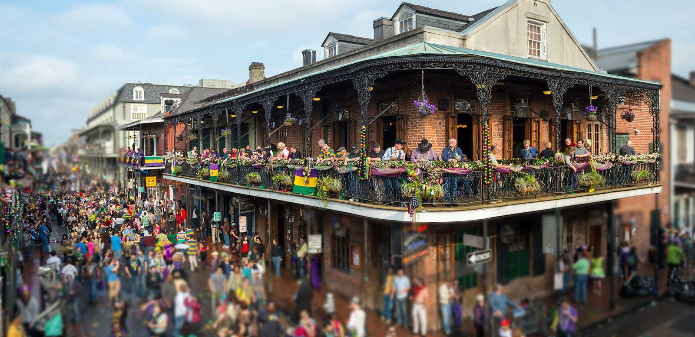

Explore The Night Life

Participate in Day Parades

Participate in Night Parades

Follow The Parade Around The City

Mardi Gras or Fat Tuesday, refers to events of the Carnival celebration, beginning on or after the Christian feasts of the Epiphany (Three Kings Day) and culminating on the day before Ash Wednesday, which is known as Shrove Tuesday. Mardi Gras is French for "Fat Tuesday", reflecting the practice of the last night of eating rich, fatty foods before the ritual Lenten sacrifices and fasting of the Lenten season. Related popular practices are associated with Shrovetide celebrations before the fasting and religious obligations associated with the penitential season of Lent. In countries such as the United Kingdom, Mardi Gras is more usually known as Pancake Day or (traditionally) Shrove Tuesday (derived from the word shrive, meaning "to administer the sacrament of confession to; to absolve").
Some think Mardi Gras may be linked with the ancient Roman pagan celebrations of spring and fertility such as Saturnalia, which dates back to 133–31 BC. This celebration honored the god of agriculture, Saturn. It was observed in mid-December, before the sowing of winter crops. It was a week-long festival when work and business came to a halt. Schools and courts of law closed, and the normal social patterns were suspended. On the Julian calendar, which the Romans adopted in 45 BC, the winter solstice fell on December 25. Hence, the celebration gradually became associated with Christmas.


The festival season varies from city to city, as some traditions, such as the one in New Orleans, Louisiana, consider Mardi Gras to stretch the entire period from Twelfth Night (the last night of Christmas which begins Epiphany) to Ash Wednesday. Others treat the final three-day period before Ash Wednesday as the Mardi Gras. In Mobile, Alabama, Mardi Gras–associated social events begin in November, followed by mystic society balls on Thanksgiving, then New Year's Eve, followed by parades and balls in January and February, celebrating up to midnight before Ash Wednesday. In earlier times, parades were held on New Year's Day. Carnival is an important celebration in Anglican and Catholic European nations.
There’s really no better way to describe the uniqueness of Walk-On’s Sports Bistreaux. We start every dish from scratch and use fresh ingredients to bring our mouthwatering, Cajun cuisine to life.
Visit Walk-On!
Brimming with style and grounded in our community, Sheraton New Orleans Hotel is the perfect home base for your downtown escape. Located on Canal Street, our hotel is steps from the buzz of the French Quarter
Visit Sheraton Hotel!Suite rooms evoke the French Deco decadence of the city, with a king bed, window seats and a custom cotton matelassé.Corner Studio Suites evoke the French Deco decadence of the city, with a king bed.
Visit Ace Hotel!Rich in history and personality, New Orleans is unlike any other US city. Honoring its spirit and elegance, The Ritz-Carlton, New Orleans invites visitors to its French Quarter retreat, set within a 1908 Beaux Arts building.
Visit Ritz-Carlton!
We live at the intersection of parking and technology. We are a technology company, a parking operator, and network of parking advisors to bring it all together. We built our own custom cloud-based parking
Visit Premium Parking!
The Louisiana Children's Museum (LCM) has taken their endless opportunities to explore, experience and learn outside to their new home in New Orleans City Park. This brand new campus features 8.5.
Visit The LCM!
The Museum of Death is observing the city of New Orleans' mask and vaccine mandate. Guests will be asked to show an ID along with their vaccine card or negative Covid test to gain entry.
Visit The Museum!Join us for a spirited adventure through Zak Bagans’ The Haunted Museum in Las Vegas, as seen on the Travel Channel’s Ghost Adventures!See original collectibles from haunted sites.
Visit The Museum!